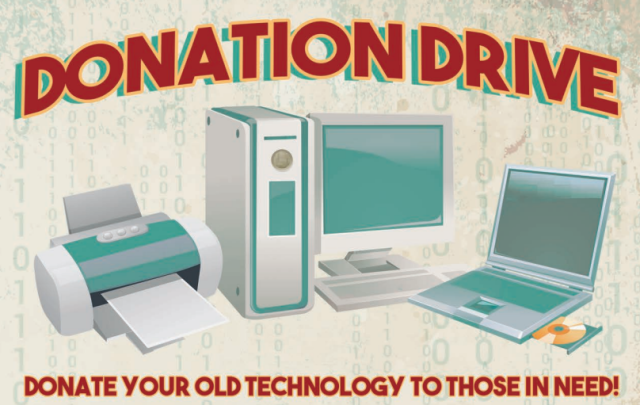

.png)
| Title | Details | Images |
|---|---|---|
| How can we minimize the impact of computer device production on the environment? | ||
| Suitable Materials |
Use recycled or sustainably sourced materials in manufacturing. This reduces the need for virgin resources and minimizes waste. |
|
| Energy Efficient Manufacturing |
|
 |
| What are some ways to reduce the environmental impact of computer use? | ||
| Efficiency |
According to measurements from the University of Oxford, a desktop computer with a screen in use uses about 40W of electricity. This was lowered to 15W when the equipment was not in use and 2W following a shutdown thanks to power-saving features. Turning off the desktop at the wall socket would save the last 2W.
some tips: |
|
| Consume less |
|
 |
| How can we minimize the impact of computer device disposal on the environment? | ||
| Recycling Programs |
Differnt types of recycling programs: Toronto recycling programElectronics should never be put in the Blue Bin (recycling) or garbage. The City of Toronto collects unwanted electronics for free to ensure they are disposed of safely, recycled and kept out of landfill. Electronic items can be put out on garbage day for pickup, brought to a Drop-Off Depot or Community Environment Day or donated for reuse. For additional drop-off locations for electronics, visit the Resources Productivity & Recovery Authority web page. |
 |
| Donation and Reuse |
|
 |